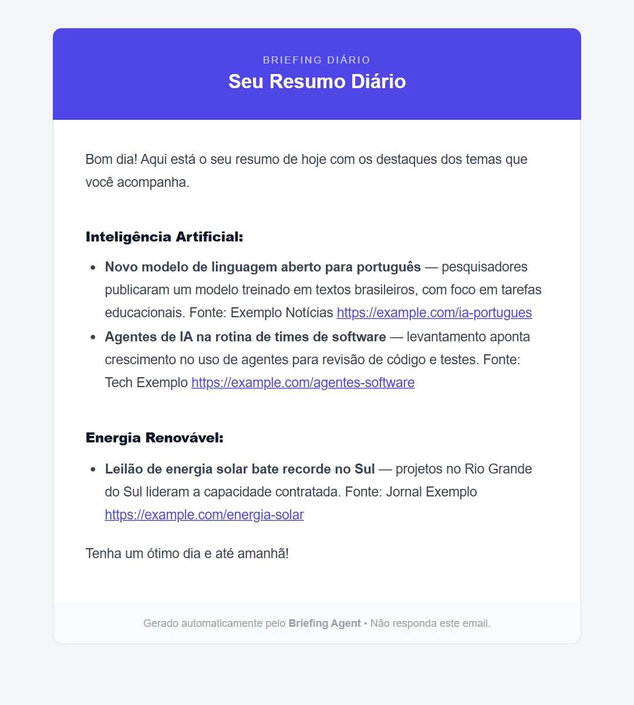

IA aplicada
Briefing Agent
Agente que gera briefings de notícias personalizados com LLM. O usuário configura tudo conversando com um bot no Discord e recebe o resumo diário por Discord e e-mail.
Minha parte: suíte de testes dos modelos, do agente de configuração e da coleta de notícias; e-mail em HTML.